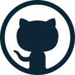

My Projects
Personal Projects:
Portfolio
HTML, CSS 2024A lightweight portfolio to demonstrate some of my projects in more detail and function as an archive.
Note: Written in vanilla HTML and CSS to be rewritten in React.HedgeFollow Sweeper
Python 2023Developed a web scraper for hedgefollow.com using Python, leveraging BeautifulSoup, Selenium, requests, regular expressions, and CSS selectors. The scraper extracted data from the past 24 hours and stored it in JSON format for further analysis. This data was used to identify the greatest stock changes and percentage shifts among insiders. Using the Twitter API and cron jobs, I automated tweets to report the insiders with the largest portfolio movements in terms of magnitude and percentage when compared to all other insiders for the given time period. I also handled various edge cases as the project progressed, such as for instance, modifying the cron job to prevent it from running on weekends and ensuring smooth functionality throughout the project.
Note: I plan to extend this project by developing a full-stack web application using React, ASP.NET, and SQL Server.Chatroom + Packet Sniffer
Java 2022 Part I: As it was my first time socket programming, there was a lot of learning to do such as learning what IP addresses, ports, and how data were handled at each node. It was great to see real world application of programming concepts I had learned in class bring to life a chatroom, via a ‘server’ and ‘clients’. I used Java’s interfaces, abstractions, and enums. I was able to easily create an interface with modularity in mind for scalability and rigidity to handle different types of encryptions and their respective operations where appropriate. A flaw introduced in this project was the key that was used to encrypt and decrypt messages among the clients in the network. This meant that with a packet sniffer it would be easy to simply intercept the key and use it to gain unauthorized access to the messages between clients in the network. This is exactly what will be investigated in Part II. Part II:An existing packet capture library called Jpcap was already available in Java. Therefore, I used this library in the chatroom I created in Part I by configuring it through a pom.xml file and Maven. I learned to look through the Jpcap documentation to find relevant functions to intercept messages sent through plain text in the network. After extending the program a bit more, the Initial Vector and Decryption Key could also be intercepted in the network as I knew the implementation of the chatroom system. Further filtering and conversions in the data stream had to be made to make the program run smoothly.Academic Projects:
Secure Peer-to-Peer Messaging
Python 2024Utilized primitive cryptographic features from the pyca/cryptography library for python to implement a secure environment where clients are able to authenticate to a server and via this authentication, the clients are able to securely message other authenticated users.
UniSwap
MongoDB, ExpressJS, React, NodeJS 2024A full-stack web application using the MERN tech stack to simulate an online thrift store.
Canvas Clone
MongoDB, ExpressJS, React, NodeJS 2024Used the MERN tech stack to create a full stack project that created a clone of popular education platform. Learned to use states to keep the application handle importants states throughout the web app through React and Redux. User account creation and session handling was done via ExpressJS.
Distributed Key-Value Store
Python 2023A key-value pair data storage that was resilient against network failures that kept logs up-to-date and in order. The underlying protocol to handle this replication was the RAFT protocol by Diego Ongaro and John Ousterhout.
Image Processor
Java 2022Developed a robust Java CLI program with modular classes that was able to process images into various different filters. Such as mosaic filter, and black-and-white. After completing the underlying CLI program, used the JavaFX library to for a GUI that displayed the RGB components along with histograms to for each image that was processed.
Smash Bro Game
C#, Unity 2021A 2d platformer that had multiple playable characters in a smash bros-like game. With Unity handled smooth animation and various components of the game details: such as healthbars, the graphics attached to each object. How projectiles would animate out from the characters, melee attacks, and the networking part of Unity with Photon Networking.